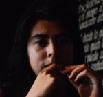
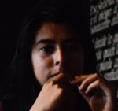
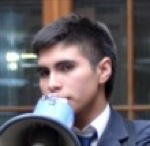
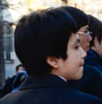
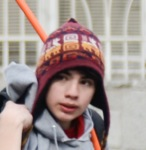
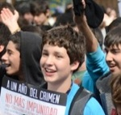
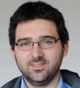
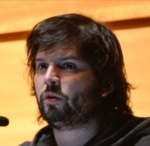

Chilean Winter
Editor's Note
Today the Daily Bruin is publishing a group of stories on the education protests that have been ongoing in Chile since 2011. The on-site reporting was made possible by the Bridget O’Brien Scholarship Foundation, now in its fifth year of funding student journalism at UCLA with global reach and local consequence.
This year’s recipients, Suzy Strutner and Jenna Belhumeur, spent 15 days in Santiago, Chile, visiting schools and attending protest events. They conducted many interviews in Spanish that were translated into English by paid professionals.
The stories and photos, as well as other multimedia content, are online at chileanwinter.dailybruin.com.
As always, this year’s project is dedicated to the memory of the late O’Brien, a photojournalist and former photographer, writer and editor at the Daily Bruin.
The Bruin would also like to dedicate this project to Jessica Lum, who was a former Daily Bruin photo editor and traveled to Thailand as one of the first recipients of the Bridget O’Brien Scholarship. Lum died this January at the age of 25 after a long battle with cancer.
Media


Profiles
 
Julia Carrillo

Jorge Villas
EDIT: STILL NEED HIS PICTURE Gustavo Beaufont

Aliza Sepulvo

Talia Allende

Dalia Coto
Jorge Cabezas
Miguel Ramirez
Ariel Devila

Emmanuel Aguilar Posada

Anael Gutierrez
Christian Blanco
Anely Ramirez
Gabriel Boric


SANTIAGO, CHILE — Few stuck around to see the end of the march.
The streets were slick with the spray of the water cannons police had used to break up groups of lingering students. Gas filled alleyways and inflamed tear ducts. It was cold.
But some rebellious high school students, or encapuchados, weren’t fazed. At about 2 p.m., the small crowd of marchers that were left passed by Liceo Insuco 2, a high school.
About 25 of the school’s students, faces disguised with bandanas and hoods, suddenly split from the marchers and broke into the campus. They hauled desks and chairs from inside their classrooms and piled them high against the campus’ front gates. They whacked at school yard walls with axes. They waved Chilean flags.
Almost instantly, they had started a toma, the student movement’s signature protest tactic: a takeover of school buildings in the capital city of Santiago in Chile.
And just like that, school went on a hiatus for a month.
In August, the Daily Bruin spent 15 days in Santiago, Chile, to report on how the protest movement to transform the country’s educational system has become a central thread in Chilean society. The University of California has seen protests flare in response to deep state budget cuts and steep tuition hikes, but in Chile, tens of thousands of marchers flood the streets with a zeal inspired by the country’s history of repression and dictatorship.
Starting in May 2011, students staged months of frequent marches and school takeovers in what has become known as the “Chilean Winter,” a name modeled after the turbulent uprisings of the Arab Spring.
Simmering tension over the education system centered in Santiago lit the spark for the movement. A spate of violent bullying incidents in Santiago schools – coupled with a Congressional decision to fund expensive power plants with money critics said could have gone toward education – led to calls for reform that escalated into full-blown protests with a unified set of demands.
Some of protesters’ main demands are free education and constitutional changes that would make it easier to pass laws that benefit the school system. In neighboring countries Argentina and Brazil, public universities are entirely funded by the government, keeping tuition free for students.
The movement, well-documented by the press, has influenced protesters a hemisphere away. At the University of California, organizers opposed to tuition increases have attempted to mirror Chilean organizational structures and demonstration tactics. Success in rallying students to protests has been mixed.
In Chile, after months of steady marches, popular support for the student movement is now waning. Public disapproval of violence and disruption has accompanied the failure of the movement to achieve its large-scale goals, said Federico Huneeus, former president of Chile’s leading student organization and a current economics professor at the University of Chile, last fall. A year and a half after the beginning of the movement, marches are happening less frequently, and gaining less media attention.
“We are obviously in a different stage this year,” Camila Vallejo, a University of Chile alumna that helped found the movement, told Chilean newspaper La Tercera last September. “I would be wrong to say that the movement has the ability to mobilize that it did last year, because that isn’t so.”
A new crop of student leaders plans to continue marches and demonstrations in 2013, but whether the movement can achieve its goals remains an open question.
Continue Reading >>Like most protests, the one in late August started slow. It was at the pace of a walk, a swarming mass of people talking and laughing together on the streets of Santiago.
A mother stopped at a street vendor to buy a hamburger for her elementary school son. Fathers toted toddlers and grandfathers brandished signs: “I support the student movement.”
Some marchers wore white face paint while others sported costumes to add to the spectacle. One student had a balloon hat. Another dressed like Snow White. A group of younger girls walked in black shirts with matching ripped leggings.
Two university students hugged and chatted over the percussion that blared from a boom box. Nearby, their friend started a sing-song chant. Students around him joined in: “What the people need is free education!”
This was the culmination of weeks of planning. Organizers had branded the entire month as “Student August,” advertising marches, rallies and debates on social media sites. One Facebook group listed daily events and guidance for students if they were arrested.
The University of Chile, a state-funded, prestigious college that acts as an educational magnet for some of Santiago’s wealthiest, was at the epicenter of these coordination efforts. Almost every university in the Santiago region has a movement-minded student group, but the most famous is the University of Chile Student Federation, or FECH. Representatives from each university’s student group come together at meetings of CONFECH, the organization that serves as a forum for exchange and planning between schools. The bimonthly meetings take place around the country, in order to engage students from all parts of Chile.
A few days before the August march, Gabriel Boric, then-president of FECH, called for an assembly of students from the University of Chile. Seated at a long table at the front of an auditorium, he outlined for his peers what would happen on the day of the protest.
For updates, check Facebook and Twitter, Boric told the assembly.
Social media is a new development, but here, protests are part of the social fabric. Demonstrations span across society – college students, high school students, parents, siblings and sympathetic citizens – and across generations.
Under Augusto Pinochet, a dictator who took control of Chile via a bloody coup in 1973, Chileans protested policies that liberalized the country’s economy and opened it up to free trade. These policies left many Chilean urban workers without jobs and further polarized Chile’s income distribution, said Barbara Geddes, a UCLA political science professor who specializes in Latin American politics.
Chileans found creative ways to express their political discontent during the nearly three decades of Pinochet’s rule, including music concerts, art demonstrations and parades, Geddes said.
In 2011, the protest culture sparked by Pinochet was resurrected by the latest generation of Chileans. They have taken up their parents’ and grandparents’ fight for economic equality in light of the problems they say exist: high university fees, a system that gives an edge to wealthier students, and private universities that allegedly turn illegal profits from student fees.
After the August march, Benji a la Luz, a student studying abroad in Chile, met up with a group of students and parents for a traditional pot-banging, or cacerolazo, outside a metro station. The act is a remnant from Chile’s earlier eras, when food shortages were common in poor neighborhoods and people took to the streets to bang pots.
A la Luz was born in Chile but raised in Florida. His parents left Chile 20 years ago after struggling with poverty under the dictatorship. Times are better now.
“I can afford my education, but that means it’s my duty to fight for those who can’t,” a la Luz said in English. “My mom’s generation started the work. We’re finishing it.”
Continue Reading >>With everyday students as its leaders and a list of clear demands, the Chilean Winter captured a worldwide audience. Eventually, the tremors reached California.
At a University of California Board of Regents meeting last July, Beezer de Martelly, an ethnomusicology graduate student at UC Berkeley, stood on her chair in the area where visitors were seated for public comment.
Wearing white face paint and a torn T-shirt, she cued Michael Jackson’s “Thriller” and began a set of choreographed dance moves.
De Martelly’s actions were a nod to a tactic seen in the Chilean Winter. In 2011, hundreds of students in Santiago stormed a park, sporting full-body zombie costumes to deplore what they called the “death of education.”
Their perfectly synchronized dance to “Thriller” went viral on YouTube. It has been viewed by about 65,000 people around the world.
Within the UC, the rallying cry among protesters centered on fast-rising tuition rates between 2007 and 2012.
In 2009, hundreds of students rallied at UCLA on the steps of Covel Commons when the UC regents voted to raise tuition 30 percent during a meeting there. Two weeks earlier, then-governor Arnold Schwarzenegger signed a state budget that cut the UC’s funding by $650 million.
UC officials have said that, even with hikes, tuition is still affordable. And increases in tuition have been accompanied by increases in financial aid for students in lower income brackets.
In 2011, students’ demands to stop tuition hikes and restore state funding to the UC were united with the international Occupy movement. Thousands of people flooded into Sacramento for an “Occupy the Capitol” rally in March.
For the most part, though, UC-wide protests in recent years have been infrequent, and draw an attendance of only a couple dozen.
Recently, organizers have been looking to Chile for inspiration. In addition to creative cues, like the idea for the zombie dance, UC student activists are also making efforts to start a formal organization where protesters from many California universities can come together – an organization like the Chilean CONFECH.
Since the Occupy UCLA group disbanded in fall 2011, UCLA protesters have joined with the United Auto Workers union and are reaching out to protest groups around the state through channels such as Facebook, said Seth Newmeyer, a third-year English student at UCLA who demonstrated during at least six UC regents meetings since 2011.
“Organizing students is our main problem,” Newmeyer said. “The reason Chile is so great at protesting is they have infrastructure in the culture of student unions being a main force in controlling the school.”
Within the UC system, Students for a Democratic University – a protest group based at UC Berkeley – is spearheading the attempt to create a single coalition that unites student groups from all UC campuses. Students for a Democratic University became the main organizing hub after the UC Berkeley Occupy movement fell dormant by fall 2012, said William Skewes Cox, a recent UC Berkeley graduate who was part of the transition from Occupy to the new organization.
If the fragmented groups from each UC campus could come together in a single meeting place, statewide marches and strikes like the ones in Chile could be feasible, said Maggie Hardy, a member of Students for a Democratic University and a second-year political science student at UC Berkeley.
So far, statewide conferences, which included UCLA students, have been held to discuss the structure of the group, and a series of forums will take place in spring to recruit new members to Students for a Democratic University at UC Berkeley. Other than the meetings, no demonstrations have been planned for the year, Hardy said.
With the freeze on UC tuition that is currently in place, protesters are going through a transition phase, during which they are able to pour more energy into organizing into a statewide coalition, Hardy said.
In November, California voters passed Proposition 30, which raised taxes and prevented millions in cuts to the UC. With the passage of Proposition 30, the state also gave the UC $125 million on the condition that the University not raise tuition this school year. The governor's proposed budget for next year includes an additional $125 million for UCs.
Under these conditions, the regents do not plan to raise tuition for the 2013-2014 academic year, said Steve Montiel, a UC spokesman. But nothing is certain, as the budget will go through a series of revisions before it is passed in the summer.
With Proposition 30 in place and tuition looking to remain stable for at least the next school year, protesters have also changed their aim from stopping tuition hikes to promoting tuition rollbacks, Hardy said. Both Newmeyer and Hardy said most of the students they protest with think universities should not charge tuition at all.
But Students for a Democratic University’s development has been hampered by disagreement over whether to install leadership in a group that currently has no officers, Armstrong added.
That’s one key difference between the UC and Chile. While Chile’s main student group has a president to act as leader and media spokesperson, the new UC organization is wary of picking out a singular figurehead, said Amanda Armstrong, a graduate student in rhetoric at UC Berkeley who is a member of Students for a Democratic University.
“We’re concerned about having a leader and a hierarchy,” she said. “We want to be able to deliberate.”
Separate from protest groups, the University of California Student Association – an organization comprised of members of each UC’s student government – regularly meets with state officials to discuss solutions for a lack of education funding, said Lana El-Farra, external vice president of the Undergraduate Students Association Council at UCLA.
Joelle Gamble, a UCLA alumna who served as external vice president of the Undergraduate Students Association Council last year, has visited the Capitol for these discussions.
She said she thinks students who lobby in California have the same passion as those who march in Chile – they just show it in a less public way.
“Just because we don’t have a protest culture in this country, doesn’t mean people don’t care,” she said. “The only time it’s hard for us to rally people is when they don’t see immediate change.”
Continue Reading >>Though steeped in protest culture, Chilean student activists are also faced with the problem of maintaining momentum after nearly two years of demonstrations.
During the Daily Bruin’s 15 days in Chile, student protesters conducted two days of marches. First, high school students organized a day of action with nearly a dozen local marches in Santiago’s various neighborhoods. The second march, held in late August, was designed as a deliberate show of vitality: marches weren’t happening with the almost-weekly frequency as at the height of the Chilean Winter one year earlier.
It was an opportunity to show that the movement was still alive and well.
Protesters have seen small political gains. In its 2012 budget, Chile’s Congress included an increase in higher education spending. The increase came in response to public pressure generated by the movement, Huneeus said. It also introduced a bill that would lower student loan rates and passed a business tax increase that is projected to generate $1.23 billion for education.
Schools that had been found to bribe accreditation agencies were shut down by the government. Pearson, an American-based education services company, was called in to evaluate the national college entrance test. The governing board of Chile’s top colleges announced that test scores will not be the only factor considered in the university admissions process. As of fall 2012, universities will also evaluate class rank, comparing students’ performances to those of other students from similar economic backgrounds, a move proponents say will give admissions officers a more holistic view of the applicants.
Harald Beyer, Chile’s minister of education, also introduced a bill that would create stricter standards for the accreditation of universities and establish a National Accreditation Agency.
The Chilean minister of education and a representative from the Council of Rectors, the governing body of Chilean universities, could not be reached for comment after multiple emails.
“Certainly we do not believe that reforms to the higher education system end here because this is an ongoing process,” said Beyer in a January statement about the accreditation bill released by the Ministry of Education in Spanish.
Beyer, who assumed his position in December 2011, has been an advocate in changing aspects of the higher education system.
But the core demands of the movement – free education and constitutional change – are not much closer to being achieved than when the protests began in 2011.
Additionally, the movement’s common tactic of shutting down schools – a tactic that has no parallel in the U.S. – has received public backlash.
Students at the University of Chile lost an entire year of school in 2011 before protesters decided to focus more of their energy on marches. While most lockouts last a few days, the University of Chile remained locked out for almost seven months, from May until December 2011. All aspects of school were on hold – no class, no grades and no tuition.
Student protesters slept, ate, played guitar and chatted in abandoned classrooms and offices. So many students refused to attend class that professors stopped showing up to teach.
During normal strikes, the University of Chile requires teachers to continue their research on campus even without students showing up for class, said Zafiro Fleming, a spokesman for the university. But when the lockdown happened, some teachers even took part in the protest, helping to orchestrate marches and lecturing to the public in plazas.
“Not many people on campus wanted to go to classes,” Fleming said. “There really was not much (the University) could do.”
Classes did not resume until the following school year.
Franco Soto, a high school student, is among the students, professors and parents who disagree with the effectiveness of the toma. Soto said he thinks marches are a better method for protest than tomas.
“In my opinion, the toma doesn’t do anything but cause us to miss class,” Soto said. “There are better ways to make changes.”
During lockdowns, protesters camping out in university buildings send students outside to solicit donations from passersby on the street. They use the funds to buy food and supplies for homemade signs and banners.
Students who don’t participate in the occupation may pick up part-time jobs or stay home and wait for classes to resume.
Since the fall of 2012, organizers have decided to turn away from the toma and focus on marches as the central tactic in order to avoid losing credit for another year of classes. But a new line of criticism has opened up surrounding the level of violence at some marches – from both protesters and police.
After a few hours of peaceful pageantry, the carabineros, or Chilean police, broke up the August march with tear gas and water cannons.
Miguel Ramirez, a student at Santiago high school Miguel Rafael Prado, outran the chemical fog in August and ducked into the doorway of a convenience store with his girlfriend. The pair sat huddled on the stoop, sniffling.
“(The gas) is horrible,” Ramirez said afterward. “You can’t breathe, your eyes hurt.”
“It’s worth it though, because our system is totally unfair.”
Chilean police use tactics such as tear gas to maintain public order at marches, said Jose Mora, a spokesman for the carabineros, in a phone interview in October.
Disruptions at marches usually come from anarchist groups who are not students, but sometimes they are caused by encapuchados, or bands of rowdy younger students who wear hoods and throw rocks, Mora said. When the encapuchados or other groups of non-students cause disorder, the police are forced to disband them, he said.
“We use gas and rainwater – we choose the methods that have the least intense impact,” Mora said.
Such face-offs between police and protesters have been extensively documented by the media. When the movement entered its second year, members of the public increasingly expressed disapproval of violent clashes. Sixty-two percent of the Chilean population said they disapproved of the protesters’ methods, according to a September 2012 poll by Chilean public opinion research company Adimark.
“Not as many people support the movement as (in 2011),” Huneeus said in an interview last fall. “It’s a combination of time and the press focusing somewhere else.”
University of Chile student Jennifer Mella has never been to a march. She said she does not think marches should be a part of the protesters’ repertoire because of the public disruption they cause.
“Marches are not effective,” Mella said. “People have a right to have a peaceful life and to not be worried every time a march is announced.”
In a January interview, the newly elected president of the FECH, Andres Fielbaum, defended marches as an effective way to transmit the movement’s message.
“If today all of Chile recognizes that there are general problems with education, it’s thanks to the marches,” Fielbaum said.
He acknowledged, however, that the movement does not carry as much force as it did a year ago. The most recent march took place in late October, when high schoolers took to the streets to promote call for a boycott of regional elections. They claimed the government does not listen to the interests of students, whether they vote or not.
Marches should be coupled with other forms of protest, like speeches, Fielbaum said. He added that large-scale gatherings of people are the best way to draw attention to the movement’s demands for free education and a cleanup of universities that allegedly turn illegal profits.
“All movements have some moments of more direct force and some moments of recovery,” he said.
He said students still have a will to protest, but it is hard to predict what their efforts will look like in the coming year. Leaders of regional student groups will ultimately determine the sizes and frequencies of marches, he added.
In the coming year, local student groups will plan their own activities alongside the larger-scale demonstrations that the FECH plans, Fielbaum said.
The movement’s declared objective to change the constitution seems to be a shot in the dark. Not affiliated with any one political party, the students would have a better chance at achieving piecemeal legal reforms to the education system with political backing, said Huneeus, the economics professor at the University of Chile. With national elections approaching in 2013, it is unclear how student activists will be involved.
With challenges ahead, experts say that putting the issues in the spotlight may be the movement’s greatest achievement so far.
“Yes, (protesters are) not changing the policy of the government, but they are changing the thoughts of our people,” Huneeus said. “The country has changed thanks to the movement.
“We don’t know how to solve our problems, but at least we’re aware of them.”